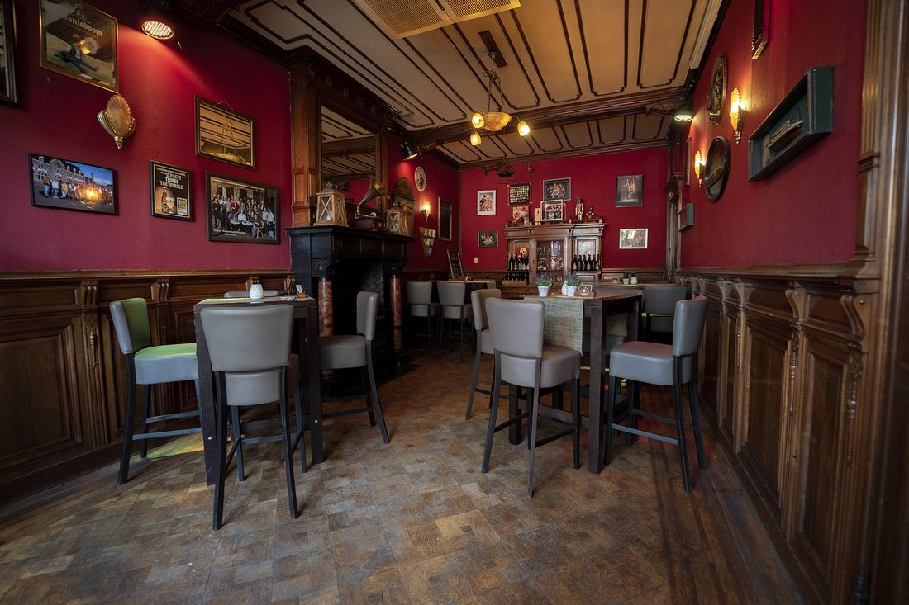
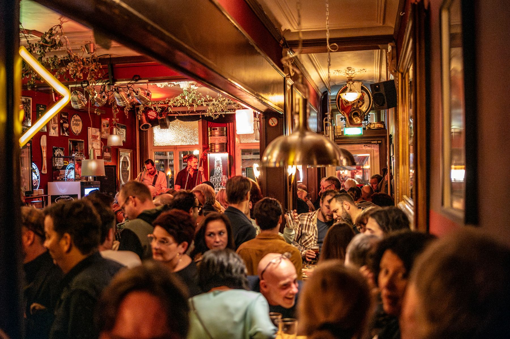
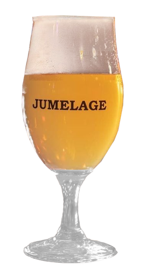
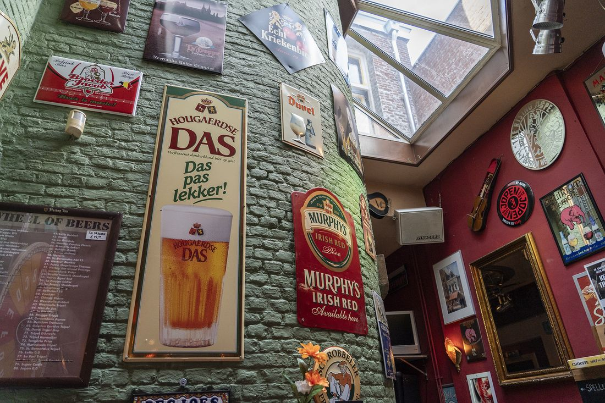
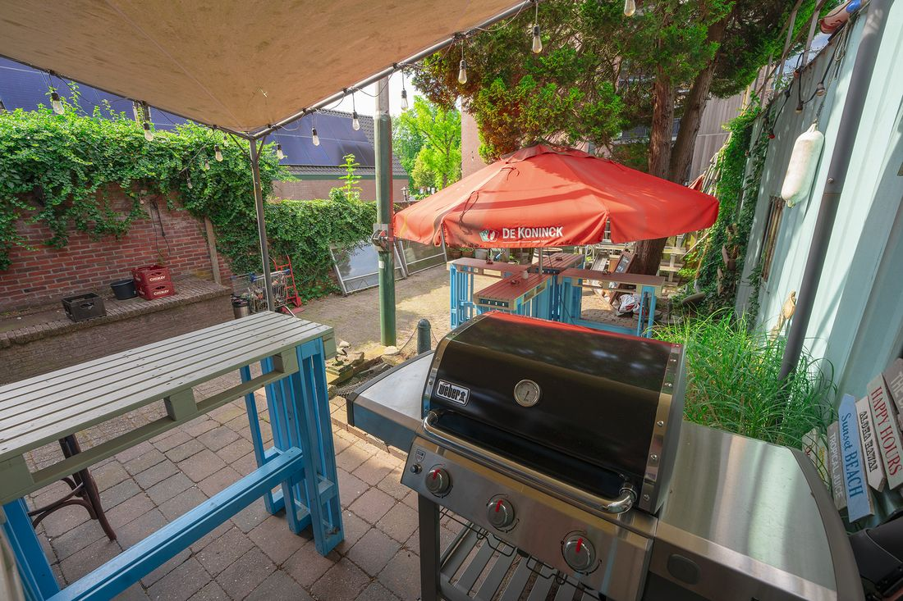
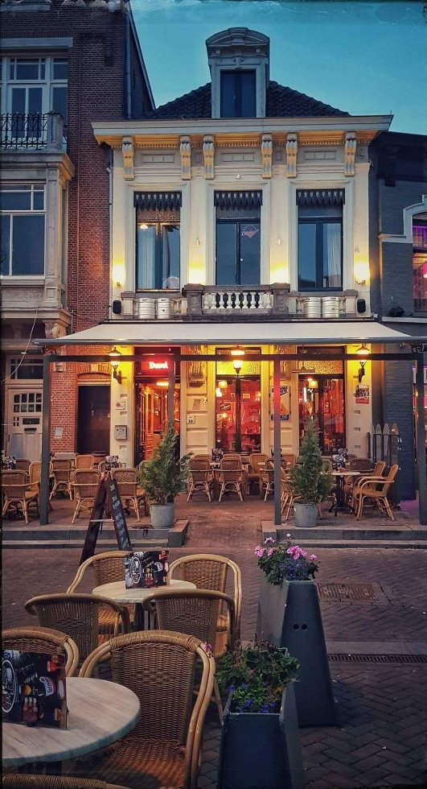

± 70 personen
Het zaaltje
Met een eigen bar en afgewerkt in nostalgisch notenhout. Je waant je in de oude praktijk van Dr. Braber.

Ruim 150 speciaalbieren, midden op de Markt, in een monumentaal pand met terras, tuin en een eigen zaaltje. Al sinds 1994.
Een heerlijke bierproeverij gedaan. Super uitleg erbij gekregen en lekker buiten onder de heater de avond doorgebracht.Paul van Hoof, via Google
Een bierliefhebber komt in De Sjoes volledig aan zijn trekken. Van trappist en tripel tot hazy IPA en barrel aged stout: er staat altijd iets nieuws op de kaart. Het Roosendaals Biergilde noemt ons het "mekka der bieren" en houdt hier elke maand een proeverij.
De naam? Sjoes komt uit Limburg: een melange van pils en oud bruin, al decennia geliefd in de Limburgse herbergen.

Een mooie American Pale Ale van 6,2%. Alleen bij De Sjoes.

Vijf proefglazen speciaalbier, aangevuld met een mooi gevulde hapjesplank. Bestel de High Beer van tevoren, dan zorgen wij dat alles klaarstaat.
Ook met een groep kun je bij ons een bierproeverij doen. Die wordt begeleid door het Roosendaals Biergilde of door een van onze medewerkers.
Voor een verjaardag, borrel of barbecue ben je bij De Sjoes op het juiste adres.

Met een eigen bar en afgewerkt in nostalgisch notenhout. Je waant je in de oude praktijk van Dr. Braber.

Een borrel of barbecue in de tuin, op een zwoele zomeravond of middag. Je stelt het feestje zelf samen.
Met een gezelschap gezellig in het café. Bestel bittergarnituur of luxe hapjes het liefst van tevoren.
Vraag naar Patrick of Maurits. Of kom gewoon eens langs om te kijken.
De Sjoes is de thuisbasis van Stichting Blues Promotie Roosendaal. Op ons podium spelen regelmatig bekende en opkomende (blues)muzikanten.
Het jaarlijks terugkerende bockbierfestival in en rond De Sjoes.
Het Back To The Fifties Festival op en rond de Markt.
Het Roosendaals Kampioenschap Blindproeven. Proef jij het verschil?
Het Roosendaals Biergilde houdt maandelijks een proeverij met speciaalbier.
Een heerlijke bierproeverij gedaan. Super uitleg erbij gekregen en lekker buiten onder de heater de avond doorgebracht.Paul van Hoof · Google
Personeel weet veel over hun eigen producten en is er sociaal.Robin 't Jong · Google
Geweldig Cafe heerlijke bieren.Leo Schijvenaars · Google

Café De Sjoes zit al ruim 30 jaar op de Markt van Roosendaal, in een monumentaal pand. Dat zie je aan de gevel, maar ook binnen: de plafonds, het torentje met zijn glas-in-lood raam en de zaal met het authentiek houten beslag.
Velen weten het café van Patrick te vinden, waaronder diverse verenigingen: vijf carnavalskapellen en een heus biergilde.
Een High Beer, proeverij of feestje? Laat weten wat je wilt en voor wanneer, dan nemen we contact met je op.
Vraag naar Patrick of Maurits.